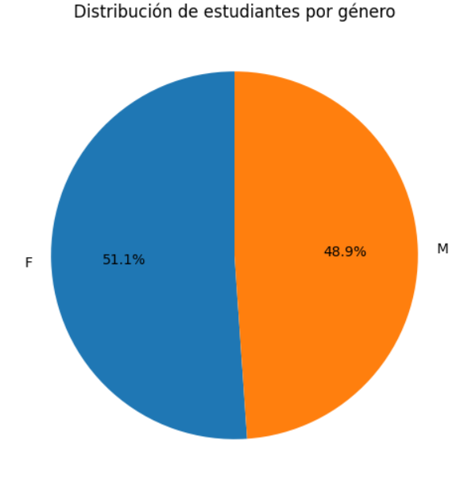
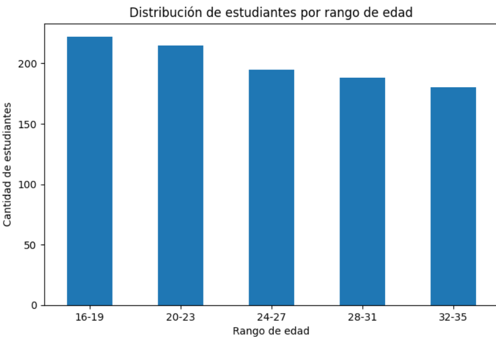
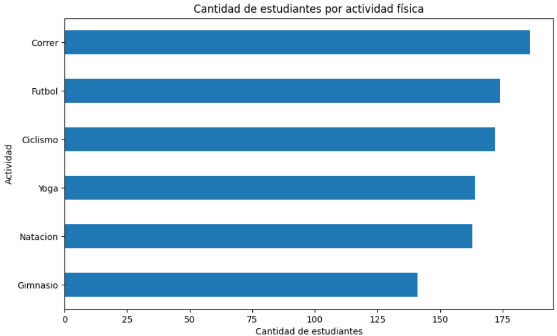
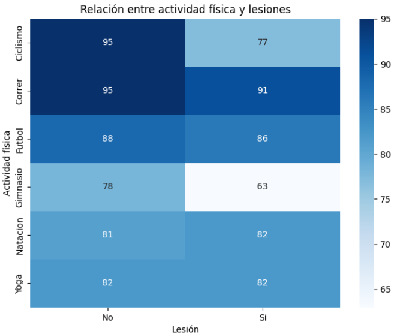
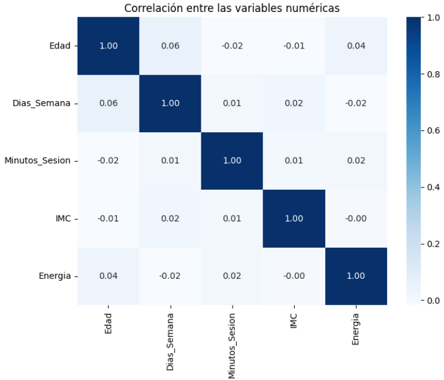
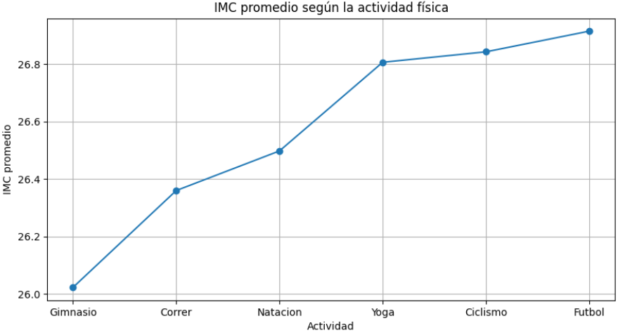

Estudio analítico de 1,000 registros para identificar patrones de entrenamiento, correlación de variables numéricas y factores de riesgo de lesiones en estudiantes.
Este proyecto consistió en la realización de un Análisis Exploratorio de Datos (EDA) sobre un conjunto de 1,000 registros y 10 variables continuas y categóricas asociadas a hábitos deportivos y métricas de salud (edad, género, IMC, minutos por sesión, nivel de energía e historial de lesiones). Se validó la calidad del dataset comprobando la ausencia de datos nulos o duplicados y se evaluaron correlaciones estadísticas mediante matrices y mapas de calor.
Python, Pandas, NumPy, Matplotlib y Seaborn
Análisis Exploratorio de Datos (EDA) & Estadística Descriptiva
Visual Studio Code / Jupyter

Distribución Demográfica por Género (51.1% F / 48.9% M)

Distribución por Rangos de Edad (16 a 35 años)

Frecuencia de Actividades (Correr, Fútbol, Ciclismo, etc.)

Heatmap: Incidencia de Lesiones por Disciplina

Matriz de Correlación entre Variables Numéricas

Promedio de IMC por Tipo de Actividad Física
• Baja Correlación Lineal Directa: Las variables numéricas (edad, días por semana, duración de sesión, IMC y energía) mostraron comportamientos independientes, con la correlación positiva más alta entre la edad y días de ejercicio (r ≈ 0.057).
• Incidencia de Lesiones: La disciplina con mayor número de estudiantes lesionados fue Correr (91 casos), mientras que el Gimnasio registró el menor índice (63 casos). En deportes como yoga y natación la proporción con y sin lesión fue equivalente (50%).
• Comportamiento del IMC y Energía: El IMC se mantuvo estable entre disciplinas con una variación máxima de apenas 0.89 puntos (Fútbol 26.91 vs. Gimnasio 26.02). Además, realizar más días de ejercicio por semana no incrementó linealmente el nivel reportado de energía.